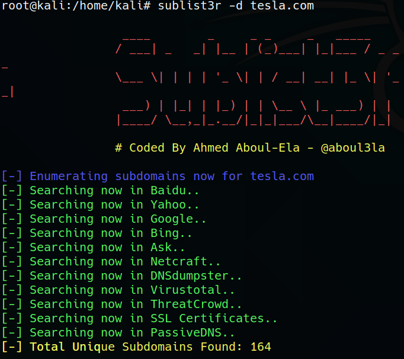

The Importance of Hunting Subdomains:
the first and mos important thing especially when it comes to Web sites or bug bounty hunting etc. is that we need to identify what sub domains are out there.
Why sub domains are important? we might run into a web site that should've never been out there.
And otherwise we restrict our attack surface while there are maybe tons of websites with tesla.com for example.
TOOLS
SubLister Tool

Results:


CRT.SH (WEB SITE)
OWASP AMASS : MOST POPULAR TOOL USED IN BUG BOUNTY
https://github.com/OWASP/Amass
TOMNOMNOM HTTPROBE : Take a list of domains and probe for working http and https servers.
https://github.com/tomnomnom/httprobe
we can narrow down results in a domain search tool with httprobe (sublister amass etc)